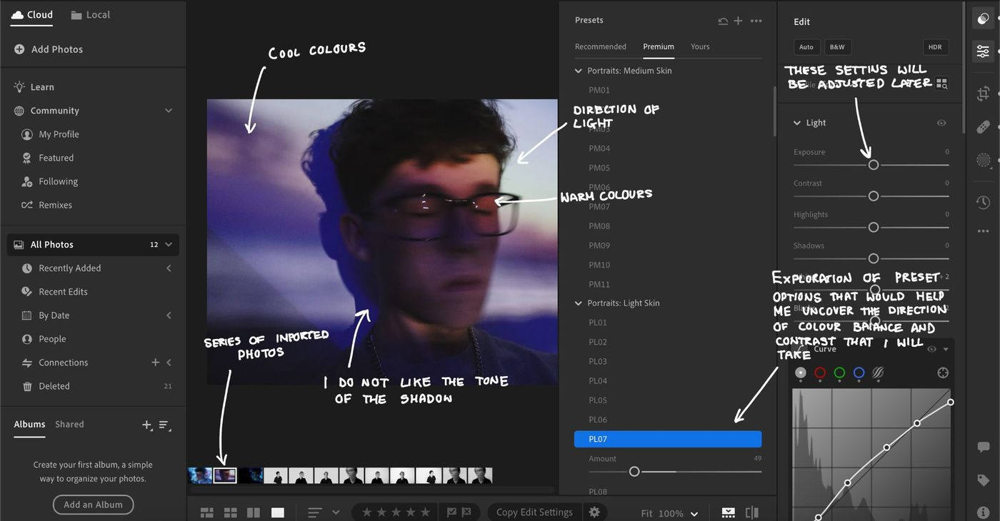
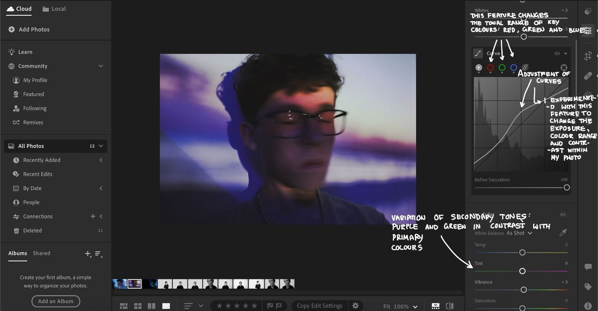
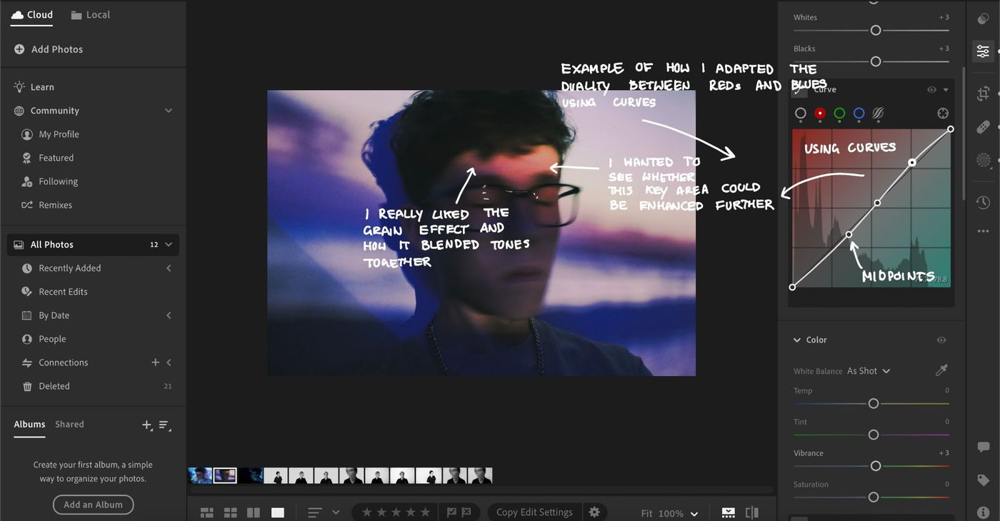
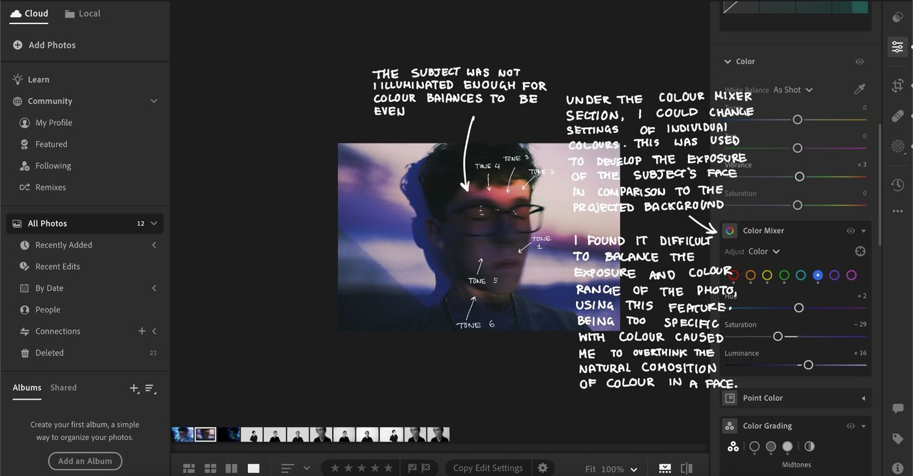
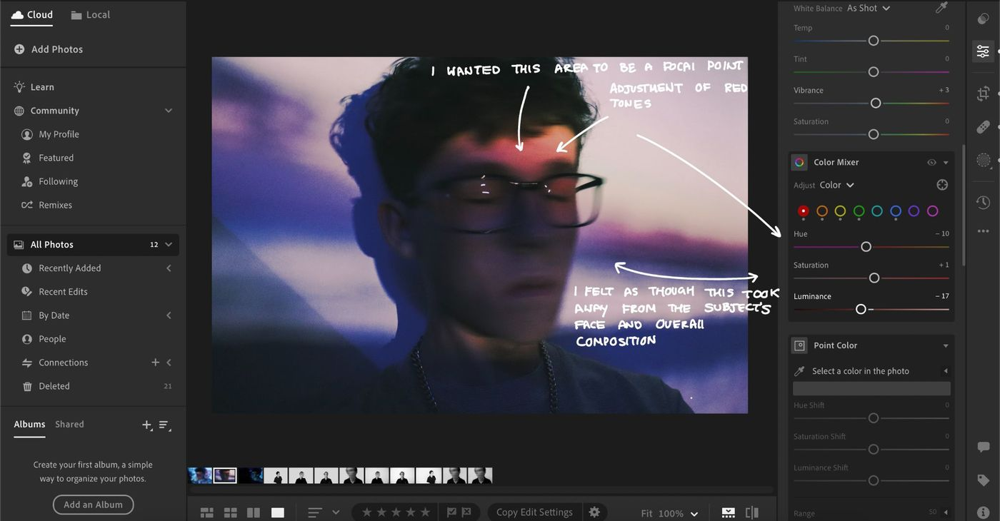
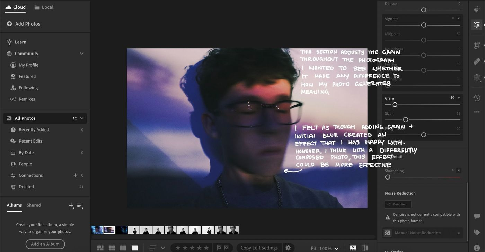

INTENTION
My second production experiment aims to explore the visual elements in greater detail. Through the use of editing techniques, I will innovate and refine my photographs while also giving them conceptual depth. Adobe Lightroom and Photoshop are essential editing tools for this outcome, and I will make the most of them.
My overarching goal is to develop a distinct visual style that reflects the captivating qualities found in my inspirational imagery. This necessitates a meticulous focus on elements such as increased contrast, precise noise reduction, impactful colour grading, and strategic composition. By meticulously dissecting and analyzing these sources of inspiration, I hope to incorporate and adapt these techniques into my own artistic repertoire.
I expect to face numerous trials and errors on my journey of exploration. However, it is through this iterative process that I hope to refine and harmonise my photographic productions, gradually shaping them to reflect distinct aesthetic qualities. Each photo provides a canvas for experimentation, allowing me to push the limits of traditional editing styles and compositional frameworks, enriching my creative vision. Through iterative refinement, I hope to not only improve my technical skills, but also gain a better understanding of the symbiotic relationship between visual elements and conceptual interpretation.
SETTINGS AND EQUIPMENT:
Laptop / computer capable of running Adobe software (I have a Macbook Air 13" which is able to download these programs)
Adobe Photoshop (2024)
Adobe lightroom (2024)
SETTING WITHIN ADOBE
Exposure
Amount of light within the frame. I need to be careful when I adjust this setting because, considering my photographs contain mostly darker tones, overly adjusting the balance of exposure could remove the rich, dim tones of my photos, which are essential to creating contrast.
Contrast
Contrast is the duality between light and dark tones within an image. Within Adobe Lightroom, contrast adjusts these tones to either be negative, which makes the frame duller and creates a vintage, soft feel. Whereas high contrast makes the black and white tones stand out strongly against each other; creating a hard and vivid aesthetic. I aim to use this function sparingly as I want to employ contrast through imagery and colour as opposed to tonal range.
Highlights
The lightest areas within an image.
Shadows
The darkest points within an image
Whites
The removal of colour casts makes the photo appear more realistic
Blacks
The darkest points within an image
Curves
An overall adjustment of the light and dark range. The curves tool allows for multiple points to be made, which allows for a greater range of depth and contrast
Masking Brush
The featureThe masking tool allows for specific areas of an image to be developed. The feature can be reversed and warped so that only areas within or outside of the selected area can be changed.
Spot Healing Tool
The Spot Healing Tool removes unwanted spots / flaws within an image and covers them up using AI
Noise
Similar to grain, noise is the amount of 'texture' an image has. The colour range within the pixels of the photograph is heightened, which created the effect of a rough and 'noisy' image. Similar to static on a television. In terms of how / if this would be used within my second production experiment, I believe that overly adjusting the noise setting will remove the tonal variation that is essential to creating contrast and focal points.
Colour Grading
Colour grading is the adjustment of hues, saturation, and brightness between the highlights, midtones, and shadows of the frame. Colour grading is fundamental to the adjustment of emotion created by a photograph.
These settings will be developed and adjusted with accordingly to achieve the look that matches my targeted aesthetic
INTENTION: EVALUATION / OUTCOME
Code and conventions are fundamental to the refinement of meaning within a photo. Having already produced these elements in my first production experiment, my exploration with editing will be to change and enhance these codes and conventions to create aesthetics. Specifically, I am aiming to alter the conventions of Colour, composition, Lighting and Mise en scene in order to elevate visual appeal. Furthermore, these alterations will help me to gather understanding of the way that elements of projected photography interact with one another; do I need to pay more attention to light balance when taking my photos?, does the level of noise create positive reception or does it prevent the establishment of meaning? These are the properties which I am exploring. It is essential that I have a greater understanding of these factors when both shooting my final photographs and when I am editing them.
The projected outcome for this experiment is to have established an understanding of the interaction between codes and conventions in terms of how they create meaning. More so, Through my process of adapting and editing I hope to refine my understanding of elements and the ways in which these need to be accounted for when shooting my photos (before editing) so that my workflow process flows through the stages of shooting. Furthermore, it will prevent me having to over compensate in Post-Production, which could reduce the quality of my photographs. I wish to achieve this goal by carefully considering the things that went well and the things that did not during my first Production Experiment, and adjusting accordingly. Additionally, the purpose of editing and adjusting elements within a photograph is to elevate visual appeal. Editing can complete a photographs dynamic and is used to capture audiences. I need to ensure that I am using the programs efficiently to ensure that my photos are of the highest quality and intention in terms of thematic exploration and intention.
In terms of planning, my work through will include adjusting visual elements according with how well they enhance aesthetics. Elements might have to be adjusted more or less and my process will constantly be adapting and changing in a non linear way.
INTENTION: PROCESS

PROS
It gave me inspiration for the direction which i wanted to take my photos in, in terms of colour dynamic and range
CONS
While it was useful to have a preset that automatically changed the colours of my photograph, it meant that I wouldn't be able to learn any new skills and would not be able to apply these skills to my final productions.

PROS
Using the curves tool was essential for me to alter my photograph in a variety of ways. Without it I would have to tediously slater each element, whereas this feature streamlined the process
CONS
It would take me some time to master this feature. It can be broken up into sections and I would need to continue to explore the alterations that the curve feature can provide. What is the right balance? What works best for my photograph and its features?




All things considered, I think that my second production experiment succeeded in achieving my objective. I developed, modified, and changed aspects of my first production experiment photo using Adobe Lightroom in order to make it more in line with the aesthetics and stylistic characteristics of the "Projector Photography" genre. But I will need to alter my procedure a little bit in order to improve the editing software's capabilities.
I think that I was successful in creating visual appeal and aesthetics for my final product. I can consider that the alteration of features such as noise, colour variation through the curves feature, grading options, and exposure were all successful in the ways that they enhanced my photograph. The noise created a 'Retro' feel, but I had to be careful with how much I changed it. This was because of the unwanted motion blur that was created during my initial production experiment. The two elements together remove a lot of detail from the subject, which is essential to developing meaning. Additionally, the curves tool was used effectively to change the exposure of the highlights, mid-tones, and shadows of the photograph. Considering the low-key lighting features of the original photograph, being able to change these features to create more detail in the subject's face was purposeful and something that I will need to use in my final production photographs. In terms of colour, I feel as though I have a good understanding of the way that colour elements create meaning. The production experiment I used incorporated a variety of colours, both warm and cool, that contributed to visual storytelling and an eye catching design. The added grain complemented the blending of these colours as opposed to sharp contrast. However, I need to consider what areas of the subject are fully illuminated. When fully exposed, the tonal range within the facial hues decreases and creates a seamless contrast between highlights and shadows. For my second production experiment, there was not enough illumination of the face, so the primary focal point was the forehead and not the eyes. I need to learn from this so that meaning can be created in my intended way.
Having achieved both production experiments, I now have an understanding of what my process will be. I need to take into consideration the elements that could enhance and impact my final displays. I have explored the relationship between codes and conventions, and I aim to apply these factors to my final display. In terms of what I can improve upon, I found that I need to prepare for the initial shooting of my photographs better. The development of my photos is a non-linear process; alterations will be made across different stages of the design process. Accounting for flaws in my preproduction stage will assist in the way that codes and conventions combine to establish meaning. For example , if my subject is not illuminated enough, I will have to compensate by increasing the exposure, which can remove detail and would leave my final product looking unfinished. I hope that I can convey meaning purposefully so that the needs of my genre can be met.